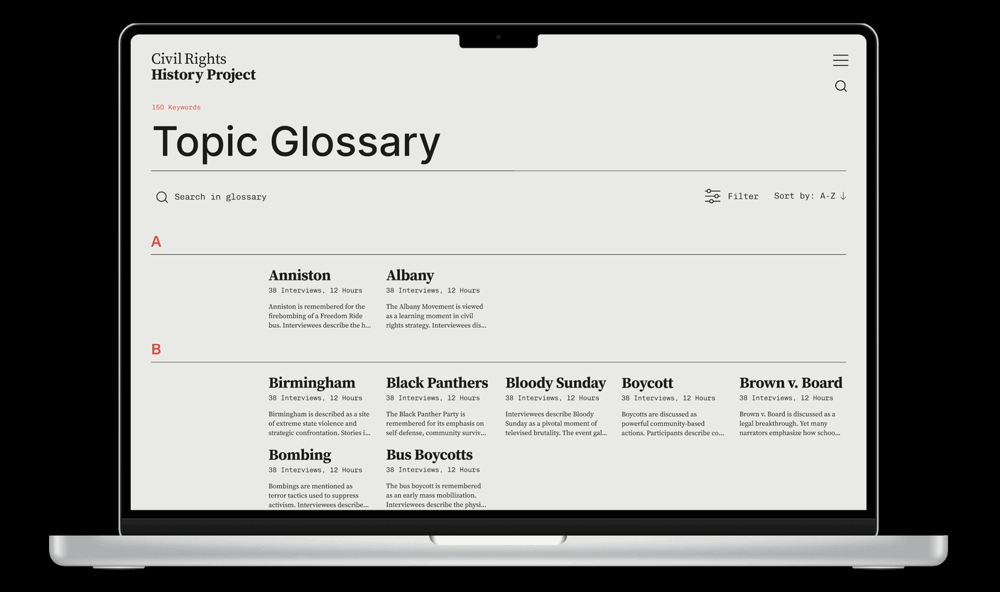

(designer)
MUUSE
(UI, research)

- → Ongoing
- → Website Redesign, Research
- → View Full Prototype
- Team: Professor Dustin O'Hara (Advisor), Jack Sovelove (Development), Sofia Choi (Interface Design, Research)
Website interface redesign of the Library of Congress's Civil Rights Oral History Project archive. The redesign was completed as a part of a research project under Professor Dustin O'Hara from the Internet Studies Department at Western Washington University. The project is focused on increasing accessibility in large video archives.
Timeline
The website landing page is a long-scroll timeline of frequently discussed events from the the archive. It covers important historical moments from the Civil Rights era, accompanied by imagery and emphemera from the time-period. Users can navigate into video playlists that correspond to the specific events in the timeline, and can click through playlists based on event. Interviews within these playlists have been clipped to the portions of the partcipants interview that discuss the event in question.


Search
The search functionality will bring users to a results page that defines the term within the context of the archive, pulls relevant quotes from interviews, and suggests interviews and topics related to the search inquiry.

Interview Index
The interview index allows users to look through the entire archive. From this point, they can navigate to full-length interviews. Full-length interview pages differ from playlist pages as they include a summary section that divides the interviews into smaller, thematic chunks.


Glossary
The glossary contains all the main, frequently discussed topics from the interviews, combining the topic tags seen on other screens into one page. Clicking on a topic in the glossary will bring users to a page that defines the term in the context of the archive and provides relevant quotes and materials.
